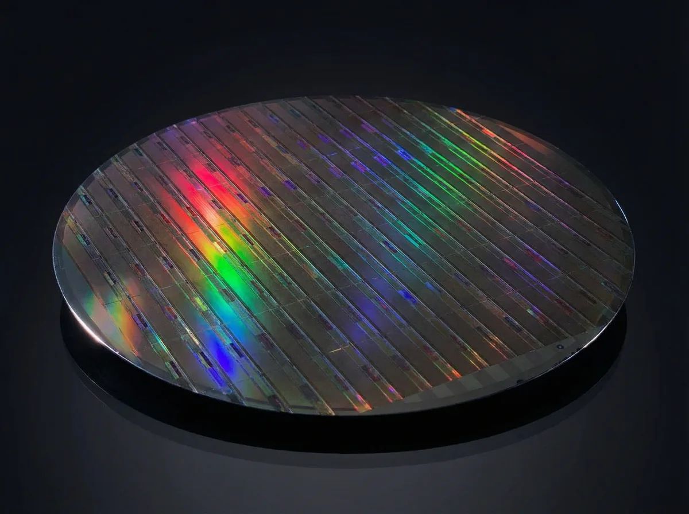

X-Ray Detector
Manufacturing Services
In-house detector manufacturing — from CMOS wafer to finished sensor.
Overview
Built in-house, from wafer to sensor.
Athlos manufactures its imaging sensors in-house and in partnership with the VTT Micronova cleanroom facility in Espoo — one of Europe's leading nanofabrication environments. This deep manufacturing capability is part of what makes Athlos sensors different: we control the full process, from detector material and bump bonding to final assembly and characterization.
The same manufacturing infrastructure that supports our own product lines is available as a service. Athlos can support partner and OEM projects requiring precision detector manufacturing, CMOS bumping, or specialized assembly processes.

Capabilities
Precision at every process step.
Detector Bumping
Fine-pitch InSn solder bump deposition on CMOS wafers. Sub-100 µm pitch capability for CdTe and Si detector integration. Fine-pitch Cu pillar bump deposition on CMOS wafers. Sub-30 µm pitch capability for CdTe and Si detector integration.
Flip Chip Bonding
Precision flip chip interconnection of detector material to CMOS readout. Critical for achieving the direct electrical contact that enables direct conversion imaging.
Wire Bonding
High-density wire bond connections from CMOS die to PCB and packaging substrates. Suitable for fine-pitch and large-format sensor configurations.
X-Ray Probing & Characterization
Electrical probing at wafer level, including X-ray-based inspection. Full detector characterization for imaging uniformity, sensitivity, and noise performance.
Die Bonding & Assembly
Precision die bonding and multi-layer sensor assembly in controlled clean environments. Athlos coordinates all assembly stages in-house.
Quality & Reliability
ISO 13485:2016 quality management. Process controls at every manufacturing stage, from incoming material inspection to final product test and release.
Facilities
VTT Micronova cleanroom access.
Athlos has full access to the 2,000 sqm VTT Micronova cleanroom facility in Espoo, Finland — one of Europe's most advanced nanofabrication, thin film, and microsystems cleanroom facilities.
This partnership gives Athlos and its manufacturing customers access to a world-class facility, without the capital cost of a standalone cleanroom. Combined with Athlos's own assembly and characterization infrastructure, this enables full end-to-end sensor production.
Manufacturing partnership enquiries.
If you are developing a detector-based product and need precision manufacturing support — from bump bonding to full sensor assembly — contact Athlos to discuss your requirements.
Last updated: